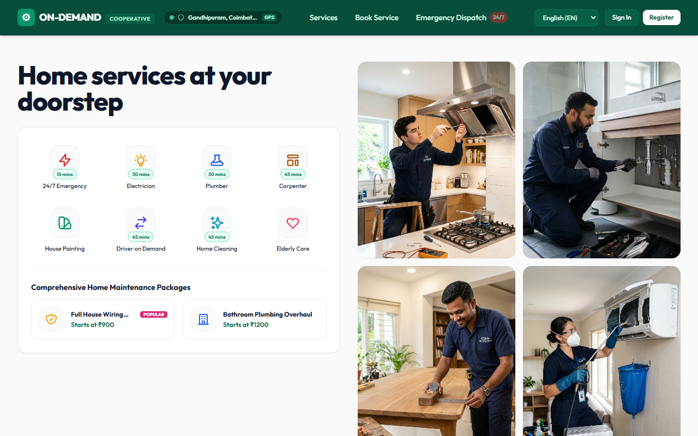
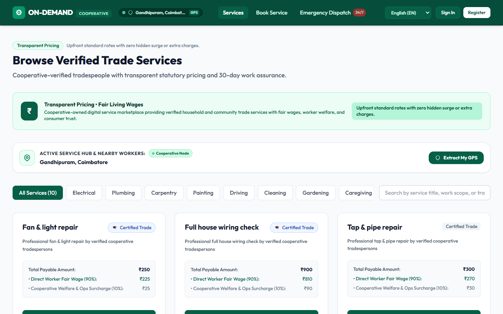
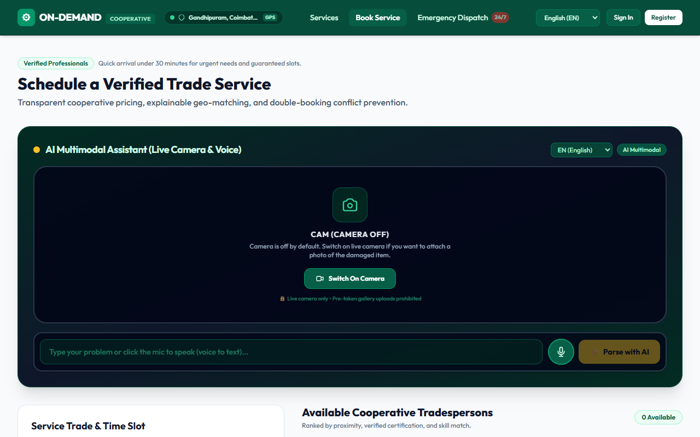
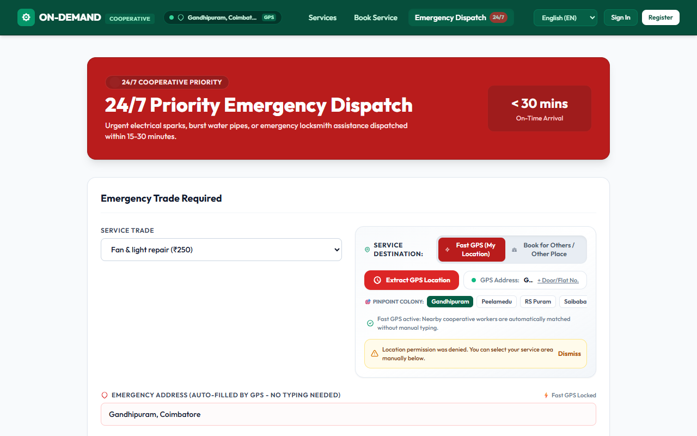
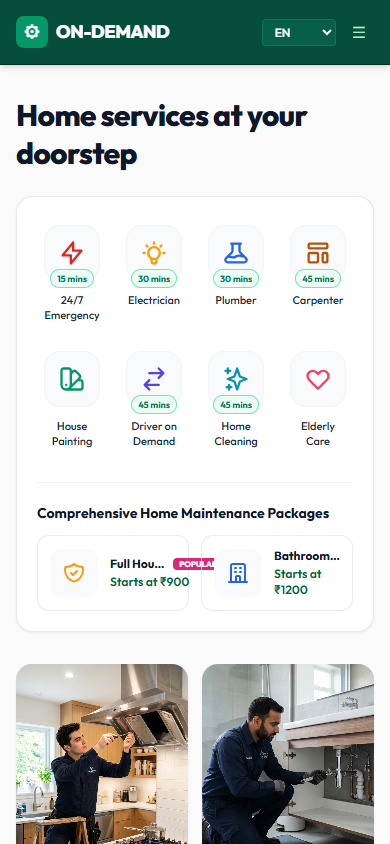

"Private taxi/service apps take ₹35 from every ₹100 an electrician earns, leaving them poor. We built an app owned by the workers themselves where they keep ₹90! The remaining ₹10 gives them a safety helmet, medical clinic card, and tool insurance!"


| Real-World Challenge | Engineering & Civic Solution |
|---|---|
| Low digital literacy of workers | Voice search in Tamil/Hindi + 1-tap accept button + audio cues. |
| Worker schedule conflicts | Database interval locks (HTTP 409) eliminate double-booking. |
| Safety & citizen trust | Cooperative ID vetting + Aadhaar + 30-day rework guarantee. |

| Evaluation Parameter | Corporate Aggregators | ON-DEMAND Cooperative |
|---|---|---|
| Worker Take-Home | 60% – 70% (Deductions) | 90% Statutory Living Wage |
| Platform Fee | 25% – 40% (Corporate Profit) | 10% (Reinvested in Welfare & Kits) |
| Dispute Resolution | Cold algorithmic deactivations | Elected Society Committee review |
| Social Security | Zero (Classified as "Contractor") | Integrated ESI & Labour Board Fund |
| Local Economy | Profits siphon to foreign VCs | 100% circulating in Tamil Nadu |

Steady respectful livelihoods, dignity of labour, free tool libraries, and healthcare protection for families.
Verified police-cleared professionals, prompt emergency arrival, no hidden surge fees, and 30-day repair guarantees.
Formalization of the unorganized blue-collar workforce with transparent real-time database governance.
docs/ps-feature-mapping.md (100% compliant)docs/demo-script.md (7-min judge guide)docs/architecture.md (Full system spec)